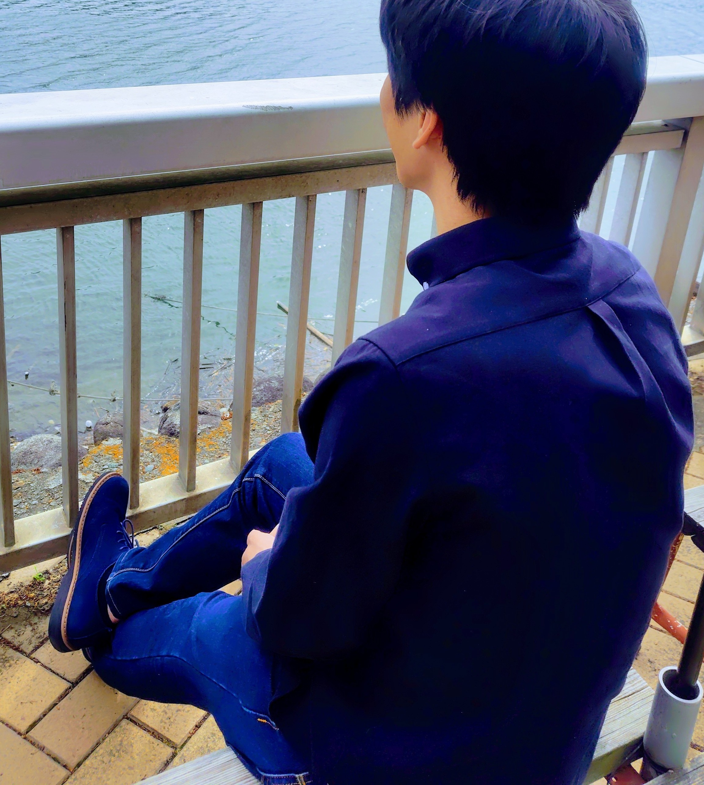

THE SHELF
本棚
0 TITLES
該当する本が見つかりませんでした。
READ
SLOWLY
SLOWLY
A NOTE ON READING
読後に残るものを、
静かに集める。
本を読むことは、答えを集めることではなく、自分の中に新しい問いを育てることかもしれません。この本棚では、読んだ本の紹介と、そこから考えたことを少しずつ記録しています。

01ABOUT THE AUTHOR
制作者紹介
勝村和也 / Katsumura Kazuya。データサイエンスや機械学習に関する仕事をしながら、読書と日々の気づきを記録しています。
本を通じて考えたことを、静かな読書室としてまとめています。
制作者ページを見る 02